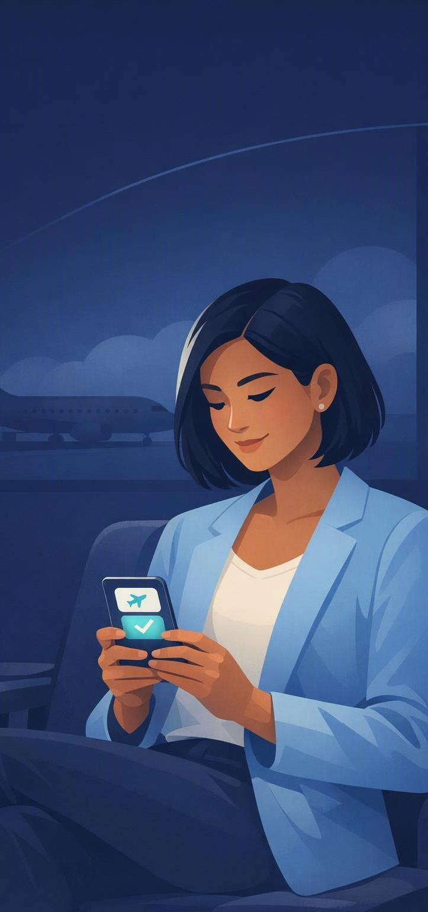

IndoAir · Passenger disruption management · Proof of concept
A mobile-first recovery platform that helps passengers understand what happened, decide with confidence, and recover in minutes.
Surya Haridasan · SkyConnect POC pitch
The disruption problem
of flights
face significant disruption on any given day
minutes
average airport queue during major disruptions
of passengers
prefer self-service rebooking when comparable options are offered
Sources · IATA Global Passenger Survey · 73%: Q3 competitor benchmark
What passengers face today

Primary user
Priya Sharma · IndoAir Miles Gold
What the POC is really about
The transaction
takes about 90 seconds
The queue
averages 40 minutes, because the counter is where a human helps you decide
SkyConnect
makes a stressed person confident enough to commit, alone
Live prototype
Decide
One recommended step, four paths in reach
Hold
Ten minutes to commit without losing the seat
Confirm
No fare difference, no card, ever
Tell
Recovery ends with the person expecting her
● Live · checked 09:41
Flight cancelled
We're sorry, Priya. Your flight to Singapore has been cancelled.
Today · IA 247 · Cancelled 09:35
Before vs after
Today
Feels like being left in a waiting room
With SkyConnect
Feels like someone's already handling it
Expected outcomes
minutes of passenger time to recover
where today the queue alone averages 40
self-service intent
the adoption this design is built to convert
recovery dashboard
replacing 3–5 disconnected touchpoints
counter & call-centre load
at peak disruption, where the cost sits
Design targets. The POC exists to earn the pilot that measures them.
Beyond the prototype
Built to scale
Next: agentic recovery
Thank you · SkyConnect POC · IndoAir